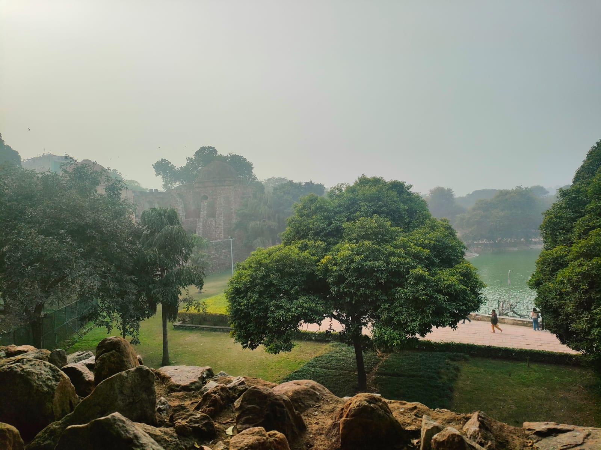

- 
Hauz Khas Fort
There are remnants of the once-glorious Hauz Khas Fort, which was built during Allaudin Khilji's reign and is located close to Hauz Khas Village. Along with other structures, the complex includes the royal water tank, an Islamic madrasa, and multiple pavilions in addition to the ruins of the Hauz Khas Fort. Visitors are drawn to this location by its vanishing beauty as well as the peace it provides.The ruins of Hauz Khas Fort, which once belonged to the medieval city of Siri, present a wealth of photographic opportunities. Residents often spend time along the lakeside or on the luxuriantly green grounds within the property.
The excavation for the water tank marked the start of the Hauz Khas Fort complex's construction. It was designed by Allaudin Khilji to supply water to the occupants of the Siri fort. He gave the tank the Urdu name Hauz-e-Alai, where Hauz means "tank."Afterwards, the water tank was rebuilt by Firoz Shah Tughlaq, who also gave it the new name Hauz Khas, or "Royal Tank." In addition, he built a number of other structures close by and on the banks. In the years that followed, the Hauz Khas Fort and Lake were joined by the construction of mosques, tombs, and pavilions. However, the complex is now just in ruins.
- State government organises a light and sound show every evening in Hauz Khas Village complex. The show narrates the history and importance of Hauz Khas and other structures around it.
- The views during sunrise and sunset are spellbinding. Then, the dark alleys and the rubble spread around act as an arena for some amazing photographs. And among the ruins and broken walls, you will find numerous rooms and passages.
- Hauz Khas Complex also has a Deer Park near the gate. Peacocks, guinea pigs and rabbits are there, among other animals.